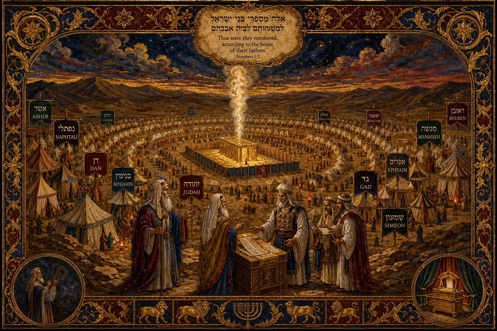

Old Testament · Book 4 of 39
Numbers
A generation counted twice, a journey that should have taken months, and a God who is patient even in the waiting.
Numbers takes its name from the two censuses that frame it, but the heart of the book is a journey of eleven days that stretched into forty years.
Your carcases shall fall in this wilderness — yet not one of my promises will fail.
What happens in Numbers
The book opens at Mount Sinai with a census, as Moses counts and organizes a camp of over two million people into tribes arranged around the Tabernacle — a nation on the verge of marching into the land God promised them. They set out, and almost immediately the trouble starts: complaints about food, a rebellion over leadership, and then the decisive moment at Kadesh-barnea, where twelve spies return from scouting Canaan and ten of them talk the whole camp out of trusting God. Because of that failure, an entire generation is sentenced to wander the wilderness until it dies out, one slow year for every day the spies had explored the land. What follows is less a journey than a long, hard waiting: Korah's rebellion against Moses and Aaron, water struck from a rock in anger, a bronze serpent lifted up to heal snakebite, and a foreign prophet named Balaam who is hired to curse Israel but can only bless them, because God will not let his word be bent. By the end, a new generation stands ready at the plains of Moab, counted again in a second census, poised at last to enter the land their parents refused.
Why it matters
Numbers is an honest book about what happens between a promise and its fulfillment. It does not flatter Israel, and it does not pretend the wilderness years were easy or quick. But underneath the complaints and the failures runs a steadier truth: God provided manna every single morning, water when there was none, and his own presence in a cloud by day and fire by night, for forty years, to a people who did not always deserve it. The lesson Numbers presses hardest is that unbelief has consequences, but so does God's covenant faithfulness — and the second outlasts the first. He disciplines his children because he is their Father, not because he has given up on them.
Jump to a chapter
Numbers has 36 chapters — select one to begin reading there.